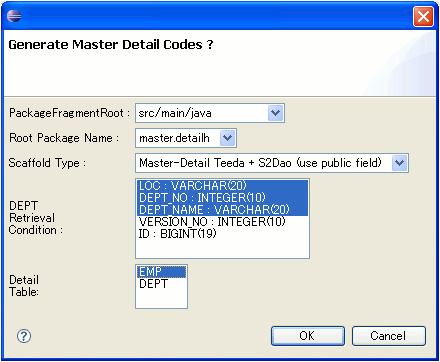

How to use Scaffold Master-Detail Teeda + S2Dao (use public field)
概要
DoltengのScaffold機能は、あるテーブルに対するCRUD(Create Read Update Delete)処理を行うアプリケーションを自動生成します。
Scaffold Master-Detail Teeda + S2Dao (use public field) の使い方
Eclipseの「File」-「New」-「Other」を選択します。 次に、「Dolteng」のカテゴリから「Dolteng Project」を選択します。次に、 「Create a Dolteng Project」画面において、Project name及びRoot Package nameを入力します。 また、Presentation に「Teeda（Page only）」、Persistence に「S2Dao」、Server Management に「Sysdeo Tomcat Plugin」を選択します。 選択後「Finish」ボタンを押下し、プロジェクトを生成します。

H2 Databaseを起動します。DatabaseViewでDEPTテーブルを右クリックし「Generate Master Detail Application」を選択します。
「Scaffold Type」に「Master-Detail Teeda + S2Dao (use public field)」を選択します。次に、「Retrieval Condition」で、「LOC」と「DEPT_NO」、「DEPT_NAME」を選択します。次に、「Detail Table」で「EMP」を選択し「OK」ボタンを押下します。
「Retrieval Condition」はマスタの一覧表示画面で使用する検索条件を表しています。ここで、検索条件を指定しなかった場合は、検索条件やページ移動のコードは生成されません。
制約条件：Master-Detail Scaffold では、マスタとディテールの結合を表す列名を「"マスタテーブル名"+"_ID"」と仮定して、アプリケーションの生成を行います。 ここでは、DEPTがマスタテーブル、EMPがディテールテーブルであり、EMPテーブルにおける「DEPT_ID」が結合のために利用されています。
マスタ－ディテール形式のアプリケーションが生成されました。下記にマスタ－ディテールの編集ページが表示されています。編集ページの上部がマスタ部、下部がディテール部を表しています。
生成した一覧検索ページを「Dolteng」-「View on Server」にて起動すると、下記のような画面が表示されます。「ACCOUNTING」の行で「Edit」リンクをクリックします。
下記のように編集画面が表示されます。
次に、レコードを新規作成してみます。まず、「Create」ボタンを押下します。
空の画面が表示されました。
値を入力し、「Confirm」ボタンを押下します。
確認ページが表示されますので、「Create」ボタンを押下します。
１番下に作成したレコードが追加されました。